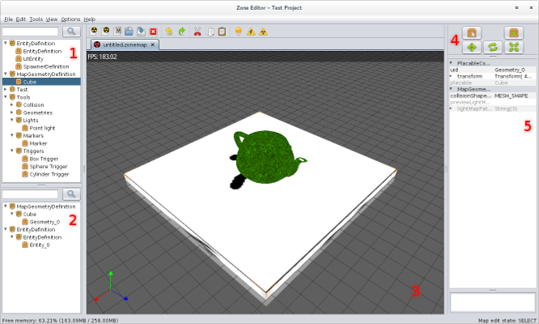

To create a new map choose File->New Work File->New Zone Map
A map needs a previously created Zone Library, located in Work Files.

Map can also be edited in Text and Graph mode like all Zone files. MapSystems can be modified only in these modes.
To place on objects switch to placement mode, by pressing and choose the appropriate object from the Placable Object Library (1). Alternativelly at any time you can double click on object in the library to immediately switch to placement mode and start placing the chosen item.
To be usable in game the map has to be converted. This will create a Zone file with converted data in the Assets directory using the same relative path as the Zonemap file. Conversion bakes lightmaps, optimizes geometry and generates data that is needed for map to function efficiently in-game.
To convert the map press .
The editor uses lower resolution lightmaps to preview how the map will look like.
To bake preview lightmaps press .
You don't place meshes directly on the map. Geometries are defined by MapGeometryDefinitions.
They can be created only in Work Files and to be usable, they have to present in an appropriate Zone Library.
While in a manipulation mode press any of these to manipulate only along a specific axis or plane.